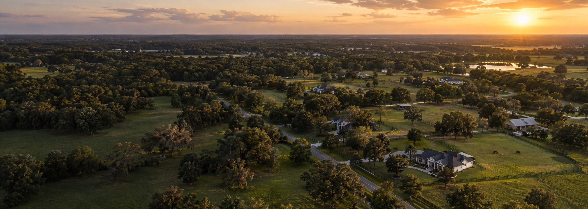
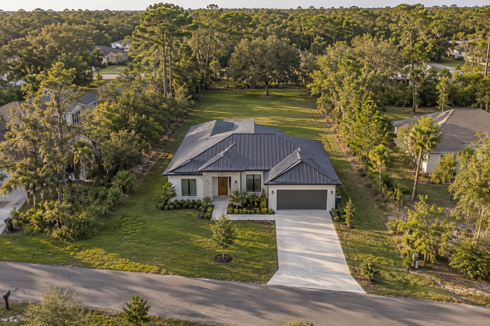
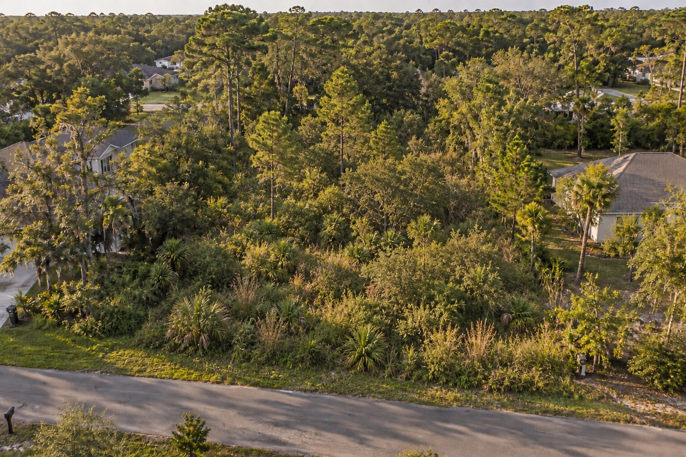

EXPLORA / ENTORNO DE EJEMPLOTodo comienza
Todo comienza
con un lugar.
Entre calles tranquilas, árboles y nuevas posibilidades. Selecciona la parcela y descubre lo que puedes imaginar en ella.


CON VEGETACIÓNCON VIVIENDA
‹ ›
Preparando la maqueta…
LA CASA EN SU CONTEXTOUna forma de
Una forma de
habitar el espacio.
La huella de la vivienda, el acceso y la terraza se leen juntos. El resto queda disponible para imaginar el exterior.
*Cálculo ilustrativo sobre un rectángulo de ejemplo. Geometría y ubicación no verificadas.UNA POSIBILIDAD / RENDER CONCEPTUALAquí podría empezar
Aquí podría empezar
tu próxima historia.
IMAGEN GENERADA / EJEMPLO